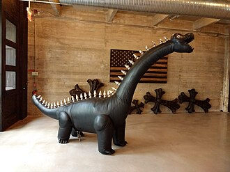
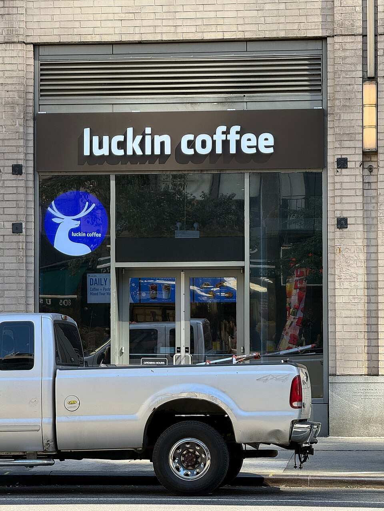

What He Is Really Arguing
compressed thesis
Brand is the visible residue of trained conviction.
Across the transcripts, David keeps translating “belief” into proof. A person proves belief by training voice and capacity. A founder proves belief by turning principles into constraints. A brand proves belief by making its standards visible in products, spaces, rituals, media, and refusals.
why the self-help clips belong here
The brand logic starts in the person.
The early clips about potential, reading, psychological games, and childlike creativity are not separate from the business clips. They define the human machinery behind any strong brand: voice, attention, responsibility, play, and capacity.
why the AI clip matters
Legibility is becoming technical.
If agents begin reading brands for us, brands need machine-readable structure. But David’s wager is that the part machines cannot feel - aura, enemy, history, weirdness, allegiance - becomes even more valuable.
Five-Part Framework
01Potential, distance/capacity, reading, child creativity
Voice Before Evidence
David opens from the creator side: people are unreliable judges of early potential, so the first task is to cultivate a recognizable voice before the world has proof. This is why the brand cases later feel personal rather than purely commercial.
DSIf633iTS5DSLUN72iZkzDSNsEnIDwIlDSuzBDADqXH
02Aman, Chrome Hearts, Din Tai Fung, Snow Peak, Ralph Lauren
Founder Principles Become Infrastructure
The repeat question across his brand profiles is not “what is the vibe?” but “what rule did the founder make real?” Distribution, production, store design, launch cadence, and refusal are where values either become durable or dissolve.
DT-fhUGjrcTDU11vjUDGwwDWq6XTQDinkDVlbFBDNuprDUDqSmmDsJM
03Chrome Hearts, Krave Beauty, Aman, Din Tai Fung
Refusal Is The Proof
The brands he admires often grow by making sacrifice visible: no ecommerce, slow expansion, fewer launches, no generic luxury template, more craft than the market requires. Refusal becomes evidence of a standard.
DU11vjUDGwwDWCbDjVEv1YDT-fhUGjrcTDWq6XTQDink
04To Summer, Laopu Gold, HeyTea, Beams, Gentle Monster, Nonfiction, Onitsuka Tiger
Non-Western Luxury Is A Future, Not A Footnote
The Asia-centered clips are the page’s real expansion. David treats Chinese, Japanese, and Korean brands as category authors with their own cultural codes rather than as late copies of Western prestige.
DVPWceOifKlDUvgAwHjqg-DTYqvCXCeQdDTJsq-gCV-RDTNsUxBDorFDWowPBpDo3wDV0y4p9ONfT
05Agentic branding, NPR, in-flight magazines
Machine Legibility Cannot Replace Aura
The AI-agent clip reframes the whole corpus. Brands may need clearer metadata and semantic structure for machines, but the actual advantage remains human: enemy, story, texture, memory, oddness, and emotional allegiance.
DVbB1cyjqpUDVtJaCvt9jjDXeai-RDrxF
Integrated Case Studies

Chrome Hearts as a visual shorthand for anti-scale luxury: not clean lifestyle branding, but institution, material control, and refusal.
Case cluster 01
Anti-Scale Institutions
These cases treat constraint as institutional architecture. Aman protects intimacy; Chrome Hearts protects craft and distribution; Din Tai Fung protects quality through visible labor; Nishiyama Onsen Keiunkan protects continuity over centuries. David’s deeper point is that some brands become stronger when they refuse the most obvious growth path.
AmanChrome HeartsDin Tai FungNishiyama Onsen Keiunkan
DT-fhUGjrcTDU11vjUDGwwDWq6XTQDinkDTnRTTmDjD9

Luckin stands in for David’s market-fit lens: the winning model is often the one tuned to local behavior, not inherited prestige.
Case cluster 02
Asia As Category Author
Instead of treating Asian brands as trend examples, David uses them to show how categories are rewritten from different cultural assumptions: tea as product invention, fragrance as seasonal poetics, gold as Chinese luxury confidence, eyewear stores as spectacle, retail as subcultural curation.
To SummerLaopu GoldHeyTeaGentle MonsterBeamsNonfiction
DVPWceOifKlDUvgAwHjqg-DTYqvCXCeQdDTNsUxBDorFDTJsq-gCV-RDWowPBpDo3w
Air Afrique’s Balafon reference shows owned media as a cultural world, not a disposable brand newsletter.
Case cluster 03
Worlds With Depth
The worldbuilding clips are about the burden of detail. Project Hail Mary, Stone Island, Malbon, Savannah Bananas, and in-flight magazines all show that a world is not a graphic style; it is an accumulation of rules, artifacts, rituals, archives, and audience participation.
Project Hail MaryStone IslandMalbonSavannah BananasAir Afrique / Balafon
DW6XsWwjqE8DXb2VcHjkpXDW9EPTgjmILDWyrnrEjqPEDXeai-RDrxF
NPR’s familiar identity becomes a civic memory device: the campaign works because the old cue now names a side.
Case cluster 04
Human Choice After AI
The agentic-branding material is not a side note. David is asking how brands survive when nonhuman systems mediate search, recommendation, and purchase. The answer is not simply “more metadata”; it is clearer structure plus more unmistakable human orientation.
Agentic brandingNPR campaignBrand-maxing
DVbB1cyjqpUDVtJaCvt9jjDVWZGQ6iQv7
Useful Tensions
Scale vs. Standard
David admires growth, but only when growth does not erase the original constraint. Din Tai Fung and Chrome Hearts become opposite-looking versions of the same question: what must not be optimized away?
Legible vs. Unforgettable
AI pushes brands toward clearer semantic signals. Brand-maxing pushes them toward stranger specificity. The interesting work is holding both: readable enough for systems, alive enough for humans.
Heritage vs. New Category
Some brands win through continuity; others win by inventing the category behavior. David’s corpus includes both, which keeps the page from becoming simple nostalgia for founder-led craft.
Reference Atlas
References woven through the reading
| Name | Type | Why it matters here |
|---|
| Eric Berne / Games People Play | psychology book | Relational scripts become David’s model for noticing hidden games in people and institutions. |
| Aman / Adrian Zecha | hospitality | Staying small becomes a luxury operating principle. |
| Chrome Hearts | luxury fashion | Founder conviction translated into craft, distribution, and family stewardship. |
| Din Tai Fung | restaurant system | Quality made visible through open kitchens, exacting labor, and slow growth. |
| To Summer / Shen Li | Chinese fragrance | Non-Western fragrance luxury built from Chinese seasonal and poetic codes. |
| Laopu Gold | Chinese jewelry | Luxury confidence rooted in Chinese gold craft rather than Western validation. |
| Gentle Monster | eyewear / retail | Stores as art installations and newness as repeatable moat. |
| Beams | Japanese retail | Basicness, sub-brands, and cultural curation as retail worldbuilding. |
| Project Hail Mary | film / craft | Worldbuilding through difficult production choices and invisible detail. |
| Stone Island / Massimo Osti | fashion archive | Material experimentation and archive as cumulative creative engine. |
| NPR | media institution | Inherited brand memory turned into contemporary civic alignment. |
| Air Afrique / Balafon | owned media | In-flight magazine as analog attention and cultural container. |
Method, Not Main Content
Open transcript coverage and source audit
This page is based on 38 downloaded and transcribed reels from a 40-ID caption inventory. The two requested IDs that did not become usable local mp4s after retry are DVj5LuRCX1n, DVTY-QMDqK0. The full transcript files are transcripts/davidkylechoe_transcript_detailed.txt and transcripts/davidkylechoe_transcript_detailed.json.
Processed clip IDs: DSIf633iTS5, DSLUN72iZkz, DSNsEnIDwIl, DSSMg12jsqx, DSU4OcijqsD, DSnvzvfkTXb, DSuzBDADqXH, DT-fhUGjrcT, DTAnQM4Dk3y, DTJsq-gCV-R, DTNsUxBDorF, DTYqvCXCeQd, DTkrNhgDoOZ, DTnRTTmDjD9, DU-4KNqDmmA, DU11vjUDGww, DUDqSmmDsJM, DUGvruEiWJT, DUvgAwHjqg-, DV0y4p9ONfT, DVPWceOifKl, DVWZGQ6iQv7, DVbB1cyjqpU, DVlbFBDNupr, DVoMf5rtUmX, DVtJaCvt9jj, DW6XsWwjqE8, DW9EPTgjmIL, DWCbDjVEv1Y, DWJqMjLjxYo, DWY59U2j0Xw, DWowPBpDo3w, DWq6XTQDink, DWtgcKHEW9v, DWyrnrEjqPE, DXHPQ0Sjbs6, DXb2VcHjkpX, DXeai-RDrxF